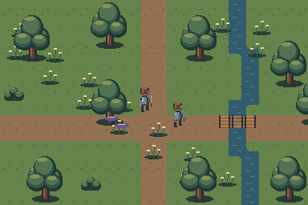
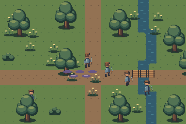
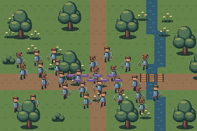

Search the Art Bible
Search works locally, including offline.
Art Bible · Other artwork
Combat, magic and multiplayer effects
Crisp signals with bounded bright areas and action-specific timing.
Edition 0.1.0 · Owner review pending for new reference art
On this page
Four-phase visual grammar
Anticipation defines intent and direction with a quieter shape. Activation carries the action’s strongest motion. Impact provides a short readable contact burst. Recovery reduces brightness and returns attention to actors. Not every effect needs equal time in every phase: a hit spark may be mostly impact and recovery.
Use hard pixel edges, deliberate clusters and transparent backgrounds. Semi-transparent source pixels are acceptable only when they form intentional stepped fades; never use resampling blur. Restrict the brightest values to a small activation or impact core. Avoid a continuous white cloud that hides hands and feet.
Effect families
| Effect | Shape / material | Initial timing guidance |
|---|---|---|
| Sword swing / spear attack | Short arc versus narrow thrust line; match weapon tip | 2–4 activation frames, 40–70 ms each |
| Arrow / projectile | Recognizable head and short trail; facing-specific silhouette | Loop only flight; separate impact |
| Shield impact / hit spark | Small radial or directional cluster at contact | 3–5 frames, 35–70 ms |
| Healing / status | Open ring or rising accents with actor visible inside | 4–8 frames, 80–140 ms |
| Explosion | Compact core, expanding ring, broken recovery fragments | 6–10 variable frames; brief peak brightness |
| Area attack / hazard | Clear boundary and interior quiet space | Anticipation persists according to gameplay contract |
| Loot highlight | Small bounded pulse; keep icon silhouette | Slow restrained loop |
| Environmental magic | Sparse repeatable overlay with local palette | Low priority relative to attacks |
Multiplayer overlap budget
In a 30-player composition, effects should expose actor centers and important ground boundaries. Reserve priority for local danger and immediate impacts; decorative auras can have fewer opaque pixels. An open-ring effect often preserves feet better than a filled disk. Art supplies density variants; gameplay chooses presentation based on its existing systems.
Test two players attacking, a party surrounding an enemy and many players at an objective. Review effect overlap against terrain and foreground props. Do not interpret a static stress scene as a performance test or a guarantee of target capacity.



Aseprite source and export
Use a canvas that contains the full effect at native density; 64×64 is an initial work size, not a universal limit. Name tags by effect phase where independent playback is needed. Anchor a swing to the shared weapon/body coordinates; anchor a ground area effect to its ground center. Record frames, durations, loop behavior and intended layer.
Export explicit PNG frames or an untrimmed sheet with JSON. Keep source colors separate from runtime tint. If the effect must be tinted in Godot, document which pixels form the value mask and verify the shader or modulate path in-engine. Do not require a custom plugin for a simple sprite effect.
Visual acceptance
An effect fails if it hides critical attacks, uses inconsistent internal pixel sizes, clips at the frame edge, moves off its attachment point or relies solely on color for danger. Review it at normal speed and frame by frame; a beautiful paused impact can conceal an unreadable animation. Keep effect art approval separate from gameplay timing and engine blending approval.